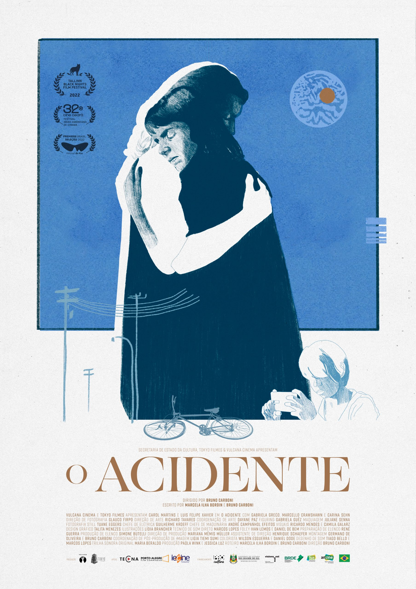

Sala Redenção visitar
-
RASHOMON
Japão / 1950 / 88 min
04 de setembro | segunda-feira | 16h
A violação de uma noiva e o assassinato de seu marido samurai são lembrados desde a perspectiva de um bandido, da noiva, do fantasma do samurai e de um lenhador.
Mais informações
CineBancários visitar
Não há sessões nas segundas-feiras
PARA ONDE VOAM AS FEITICEIRAS
Brasil/ Documentário/ 2020/ 89min
Direção: Eliane Caffé, Carla Caffé e Beto Amaral
Sinopse: Para onde voam as feiticeiras acompanha a deriva de encenações e improvisos de sete artistas pelas ruas do centro de São Paulo em uma experiência cinematográfica que torna visível a persistência de preconceitos arcaicos de gênero e raça no imaginário comum. No centro desta narrativa polifônica está a importância da resistência política através das alianças de luta comum entre coletivos LGBTQIA+, negritude, indígenas e trabalhadores sem teto.
Mais informações
RETRATOS FANTASMAS
Brasil/Documentário/2022/ 93min
Direção: Kleber Mendonça Filho
Sinopse: O filme tem o centro da cidade do Recife como personagem principal, sendo um espaço histórico e humano, revisitado através dos grandes cinemas que serviram como espaços de convívio durante o século XX. Foram lugares de sonho e de indústria, e a relação das pessoas com esse universo é um marcador de tempo para as mudanças dos costumes em sociedade.
Mais informações- 
O ACIDENTE
Drama | 95 min. | Brasil
15h
Direção: Bruno Carboni / Roteiro: Marcela Ilha Bordin e Bruno Carboni
Sinopse: A ciclista Joana é vítima de um atropelamento. Ela foi carregada no capô de um carro após antagonizar com uma motorista que a cortou. A jovem sai ilesa e decide esconder o ocorrido de sua parceira, Cecília, temendo que isso afete os planos do casal. Porém, um vídeo viral aparece online, obrigando-a a prestar queixa na polícia. Relutante, a dupla entra na vida de Elaine, a motorista, seu ex-marido Cléber e seu filho Maicon, um introvertido cineasta iniciante.
Mais informações